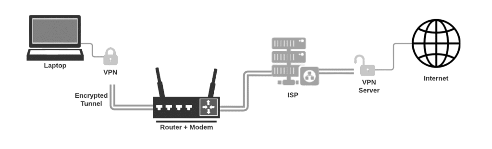

Virtual Private Networks
What is a VPN?
A VPN (Virtual Private Network) is a service that allows you to connect to the internet securely and privately by routing your connection through a server and hiding your online actions. It encrypts your data and masks your IP address to keep your online activities hidden from hackers, governments, and even your internet service provider.

Figure 1.1 - VPN Connection (Joe Robinson)
What are the different uses of a VPN?
VPNs have many uses in both personal and professional environments:
- Remote Work: Employees can securely access company networks and resources from home.
- Security on Public Wi-Fi: VPNs encrypt data on unsecured networks like those in coffee shops or airports.
- Bypass Geo-Restrictions: VPNs can make it look like you're browsing from another country, allowing access to region-restricted content.
- Data Privacy: Hide your browsing history from your ISP or other third parties.
Downsides of VPNs
- Slower Internet Speeds: Due to encryption overhead and long-distance routing.
- Potential Logging: Some VPN providers log your data, defeating the purpose of anonymity.
- Cost: High-quality VPNs typically require a monthly fee.
Pros of VPNs
- Increased privacy and security while online.
- Access to geo-restricted content and websites.
- Secure file sharing over long distances.
Protocols Used in VPNs
VPNs use different tunneling protocols to secure data:
- OpenVPN: Open-source and very secure.
- WireGuard: Newer, faster, and simpler protocol gaining popularity.
- PPTP: An older protocol that is fast but less secure.
- L2TP/IPsec: A combination providing better security but often slower.
Types of VPNs
- Remote Access VPN: Connects a user to a private network remotely.
- Site-to-Site VPN: Connects entire networks to each other over the internet.
- SSL VPN: Commonly used through a web browser.
- Cloud VPN: Designed for cloud-based infrastructures and services.
Free vs Paid VPNs
Free VPNs often come with bandwidth limits, slower speeds, and questionable logging policies. Paid VPNs offer more robust security, faster connections, and no advertisements. It's generally recommended to choose a reputable paid provider if privacy and performance are important to you.
Sources